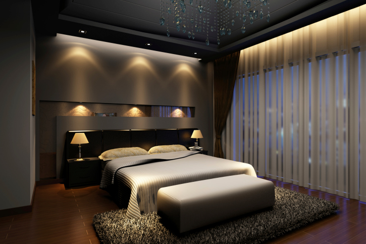
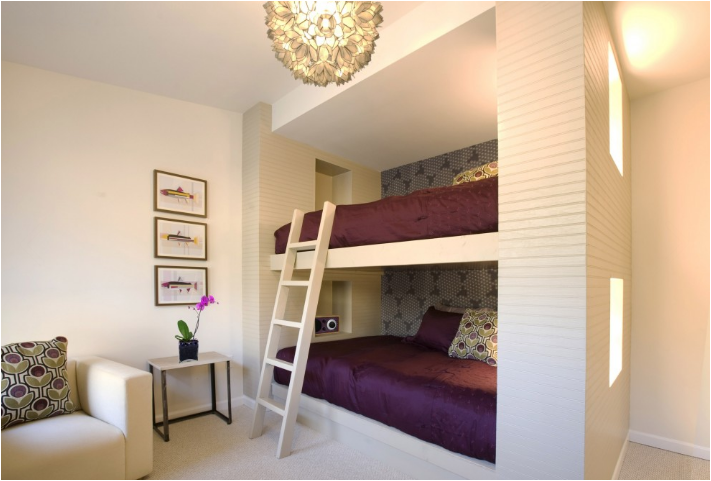

Examples of Bedrooms
Master Bedroom
The master bedroom gives adults
a place to
escape the
stress and troubles of the day. They’re generally the largest room in the home and often have an adjoining
bathroom. Some are designed with sliding glass doors that lead out to a deck or patio where you can relax and
have some privacy. From the classic to the modern design, the main things to consider are lighting, storage
space and comfort.
Dorm Bedrooms
Most dorm rooms are small, but
there are
different types of dorms rooms. Single-sex dorms allow only the same gender for occupants and can have
restrictions regarding visitors of the opposite sex. Special interest or themed dorms cater to students with the
same interests. Suites consist of two bedrooms adjacent to a shared living space. Double dorms accommodate two
people as roommates. Single dorm bedrooms are not as common but appeal to a private person.